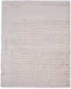
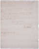

The Official Story
Chapter 12
Judge North flees after the Sessions hearing
When Rebecca Foster's case against Judge North came before the Court of Sessions in Hallowell, Henry Sewall was probably there. In a letter Sewall wrote to his friend George Thatcher in Boston, he reported that after the Sessions hearing, Joseph North fled -- just before he was ordered to be put in jail by the Justice of the Peace, Esq. Wood. Sewall told his friend, "Nothing of consequence has transpired in this quarter, except Colo. North's affair; and this has made considerable noise. His examination, as you have doubtless heard, was had before Esq. Wood at Vassalboro...and the matter referred thence to the Sessions at Hallowell term for advice. The Sessions were of opinion that the matter could not come legally before them; but consented to hear the statement of the evidence produced before Esq.Wood...Esq. Wood concluded the evening before the Court rose to order Colo. North committed. But Colo. North having made his escape, he [Esq.Wood] arrested the officer for neglect of duty. Upon further consideration, however, he thought proper to release the officer, who has since sued Esq. Wood for false imprisonment."Although we know Henry Sewall was concerned with issues of moral behavior, he offered no personal comments about the rape accusations against Judge North (referred to in the letter as Colonel North because of his role in the militia). Instead, Sewall comments at length about the legal proceedings: how Esq. Wood arrested the officer who let North flee, then decided to release the officer, who turned around and sued North for improperly imprisoning him. His telling of the events sounds a bit like Keystone Cops. Was Sewall amused by the drama left in the wake of North's disappearance? What DID he think about the charges against North?
| Martha clearly was not amused. |
If we look through Sewall's diary for clues, we come up empty handed. It is interesting to note that Henry Sewall, who wrote a lot about Isaac Foster in his diary, NEVER mentioned the Rebecca Foster rape case in his diary.

| previous |
The case is heard in Vassalboro | |
| next |
Sometime in the months after the Sessions hearing, the Fosters moved out of town. |
| Letter to George Thatcher in Boston Sewall, Henry January 27, 1790 |
View Image View Frames version |
| Envelope | Page 1 | Page 2 | |
 |
 |
 |
|
Envelope |
|
||||||
|
|||||||
|
|
|||||||